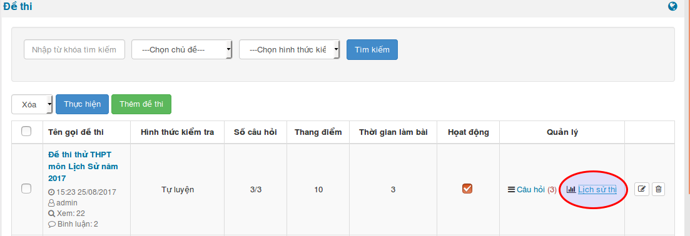
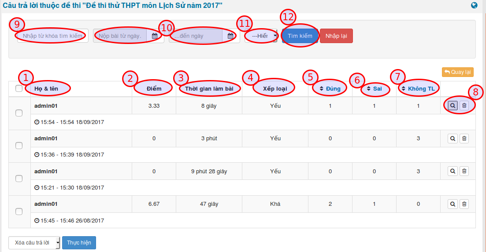

Nhấn chọn module Trắc nghiệm, chọn menu Đề thi, lúc này trên trang là danh sách các đề thi.

Trên đề thi, nhấn chọn Lịch sử thi.

Sau khi nhấn chọn, lịch sử thi của đề thi sẽ hiển thị với các thông tin như sau:
- Họ và tên (1): Họ tên thành viên tham gia thi. Dưới họ tên của mỗi thành viên là thời gian thành viên đó dự thi.
- Điểm (2): Số điểm thành viên đó đạt được.
- Thời gian làm bài (3): Khoảng thời gian thành viên hoàn thành bài thi.
- Xếp loại (4): Xếp loại kết quả bài thi của thành viên.
- Đúng (5): Số câu thành viên trả lời đúng.
- Sai (6): Số câu thành viên trả lời sai.
- Không TL (7): Số câu thành viên không trả lời.
Lịch sử thi này có thể Xem lại cho từng thành viên hoặc Xóa. (8).

Có các hình thức để tìm kiếm lịch sử thi như:
- Tìm kiếm theo cách nhập từ khóa tìm kiếm (9).
- Tìm khiếm theo khoảng thời gian dự thi (10).
- Hiển thị số lượng kết quả tìm kiếm (11).
Sau khi đã nhập đầy đủ các thông tin click Tìm kiếm (12) để tìm kiếm lịch sử thi.